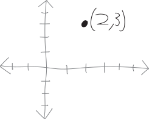
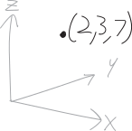
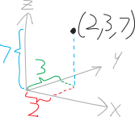

Points in Higher Dimensions
Let us go then, you and I
When the evening is laid out before the high-dimensional sky.
Like a matrix diagonalized around its basis.
Here’s a point in one-dimensional space: \[x=2\] One-dimensional space is just a line. This point is just a number on that line.
Here’s a point in two-dimensional space: \[x=2,\,\, y = 3; \text{ i.e. } (2,3)\]

Two-dimensional space is just a plane. So this point is just a point on that plane. We’ve known how to graph such points for ages and ages.Here’s a point in three-dimensional space: \[x=2,\,\, y = 3;\,\ z=7 \text{ i.e. } (2,3,7)\]

Now we have not just an \(x\)- and a \(y\)-coordinate, but also a \(z\)-coordinate! A vertical coordinate! So we go two in the \(+x\)-direction, three in the \(+y\)-direction, and seven in the \(+z\)-direction, and there we are at our point!And, OK, it’s pretty tough to draw a three-dimensional picture on a two dimensional screen, especially when you have my drawing ability. I’ll draw in the components/projections on each of the three axes:

What about a point in four-dimensional space? This is harder! For one thing, we’ve run out of letters, so I’m just going to start labelling each dimension as \(x_1\), \(x_2\), \(x_3\), and \(x_4\). But more fundamentally, we can’t see in four dimensions!!!Here’s some point in four-dimensional space: \[\left(8, -\pi, 206, 43\right)\] We could describe how to get to this point in words:
- We go \(8\) units in the positive direction in dimension \(x_1\)
- We go \(\pi\) units in the negative direction in dimension \(x_2\)
- We go \(206\) units in the positive direction in dimension \(x_3\)
- We go \(43\) units in the positive direction in dimension \(x_4\)
Here’s a point in seven-dimensional space, which we definitely can’t visualize: \[\left( 5,\, 8,\, 11,\, -3,\, 0,\, 1,\, 9 \right)\] With all of these points, I’m describing them in rectangular/Cartesian coordinates. That’s not the only way of describing points. For example, in Math 3, we learned about how we can describe points in two-dimensional space either in rectangular coordinates, or in polar coordinates. There are many, many other possible coordinate systems we could use!